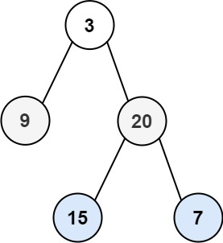

103. 二叉树的锯齿形层序遍历
层序遍历照旧，只让每层存值的方向交替：从左到右就尾插，从右到左就头插（LinkedList 两头都是 O(1)）。
思路
- 和普通层序遍历一样：队列按层处理，每层先记下
size，入队永远是先左后右，不用管方向。 - 方向只影响「值存进这一层的哪头」：
leftToRight为真用addLast，为假用addFirst。 - 这一层的列表声明成
LinkedList，才有addFirst；头尾插入都是 O(1)。 - 每层存完把
leftToRight取反；根为空直接返回空列表。
图解
最优解
1import java.util.*;2 3class Solution {4 public List<List<Integer>> zigzagLevelOrder(TreeNode root) {5 if (root == null) return new ArrayList<>();6 List<List<Integer>> ans = new ArrayList<>();7 Queue<TreeNode> queue = new ArrayDeque<>();8 queue.add(root);9 boolean leftToRight = true;10 while (!queue.isEmpty()) {11 int size = queue.size();12 // 头尾都能 O(1) 插入，所以用 LinkedList13 LinkedList<Integer> level = new LinkedList<>();14 for (int i = 0; i < size; i++) {15 TreeNode node = queue.poll();16 // 入队始终从左到右，方向只决定值存在哪头17 if (leftToRight) level.addLast(node.val);18 else level.addFirst(node.val);19 if (node.left != null) queue.add(node.left);20 if (node.right != null) queue.add(node.right);21 }22 ans.add(level);23 leftToRight = !leftToRight;24 }25 return ans;26 }27}题目
给你二叉树的根节点 root ，返回其节点值的 锯齿形层序遍历 。（即先从左往右，再从右往左进行下一层遍历，以此类推，层与层之间交替进行）。
示例 1：

输入：root = [3,9,20,null,null,15,7] 输出：[[3],[20,9],[15,7]]
示例 2：
输入：root = [1] 输出：[[1]]
示例 3：
输入：root = [] 输出：[]
提示：
- 树中节点数目在范围
[0, 2000]内 -100 <= Node.val <= 100
题面取自力扣当前版本。
数据快照 2026-11-04。题面版权归力扣所有，本站点仅供本人学习使用，请勿对外发布。